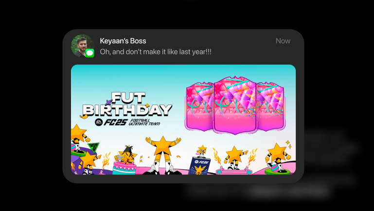
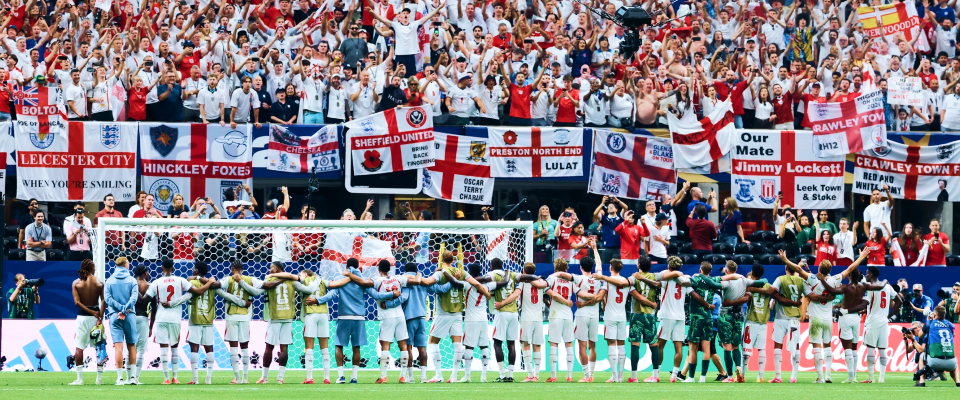
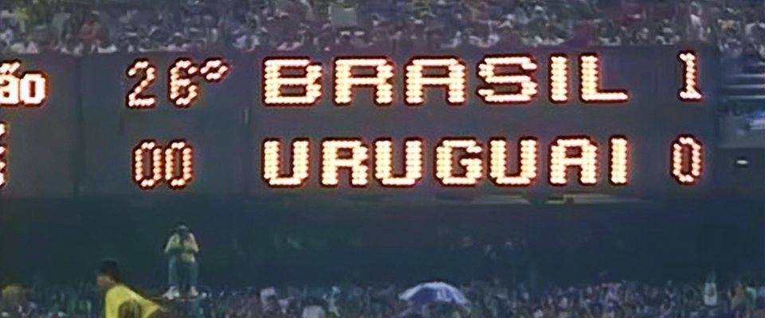
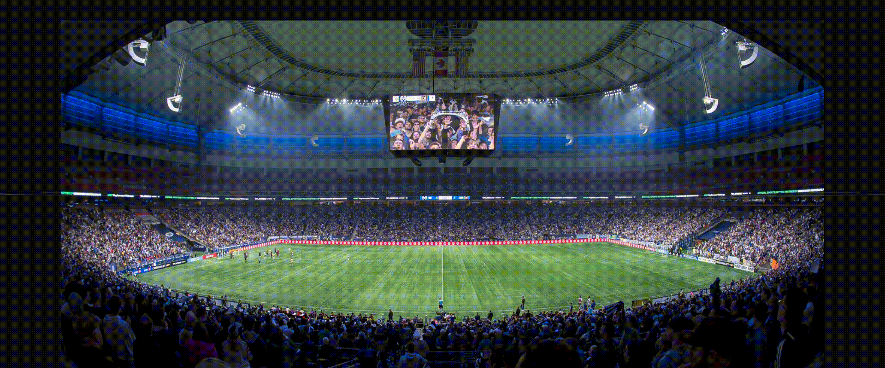
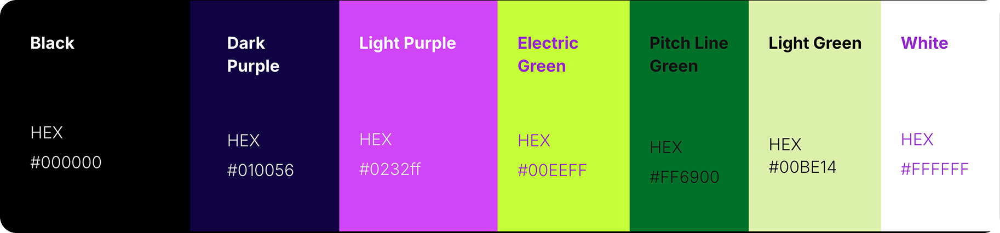

Branding at the Intersection of Football and Video Games
From Feb - Apr '26 supervised by Luis Callegari
During my time on the FC Brand Team at EA Sports, I learned the importance of concept into creation; and how to balance both product and culture.
But what do I mean by that? Let's have a look at FUT Birthday, a project I led across both brand and motion.
The project started a little bit like this...
The only guidance Luis had was to elevate the idea of celebration, away from the stereotypical approach from last year's design.

So, I began to unpack celebtration from a Football culture perspective, and how it could be brought forward into the digital realm of an EA Sports game.
Here's what I found...
Team Celebtration

The Echoes of Fans


The Emphasis of Old

 The Emphasis of New
The Emphasis of New
And so, the idea of 360 degree emotion, combining the retro and new formed the core concept.

The ring was then transitioned to 3D space to allow more depth and dimension.
With that, the modern persepctive had been addressed, but I was still missing the retro aspect.
As a result, I harnessed the dot matrix style of retro stadiums, creating a set of iconography.
The final piece was the colour. A bold, vibrant, and unexpected pallette was the perfect way to underscore this new take on celebration.

And so, the ring was born...
But, the ring needed a home... so, I built an environment for it through a background and micrographics.
To close off, here's a look at a couple of the other brand projects I worked on at EA. Would be happy to chat more about them anytime :)
Getting the chance to work on the brand team for EA Sports FC was one of my most impactful experiences.
Luis and the rest of the team taught me so much, especially when it comes to slide decking, developing concepts, and backing up design rationale.